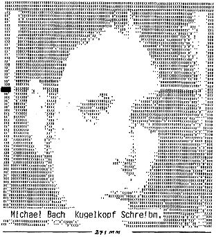

80-Bus Journal |
Januar 1983 · Ausgabe 1 |
Clemens Ballarin MX 82 FT
Verkaufe: Komfortablen Texteditor (4K, bietet Umlaute) mit Listing
DM 45.–
Etliche gebrauchte (burnt-in)
2708
EPROMs für je 5.– zu
verkaufen.
M.Bach, __ __________ __, ____ ______, _____/_____
Die mit dem TV-Interface gespeicherten Bilder möchte man sich vor weiterer Verarbeitung zunächst ’mal zu Gemüte führen. Da bietet sich die Klötzchen-Grafik an, jedoch hat diese eine kleinere Auflösung. Das Programm TV-PLOT setzt daher für 6 TV-Bildpunkte (3 vert., 2 hor.) einen Grafikpunkt, wenn mehr als Schwelle (z.B. 2) Punkte gesetzt sind. Die Funktion PUNKT(X,Y) ist 0 bzw 1 jenachdem ob der TV-Punkt hell oder dunkel ist. Das Bild war bei mir ab 8000H gespeichert.
Um eine bleibende Darstellung des Bildes zu erhalten, bedient sich TV-DRUCK einer Schreibmaschine. Das Problem der Auflösung tritt hier natürlich auch auf, zur Abwechslung ist es anders gelöst: Nur Jede 2. Zeile wird gedruckt, und es werden horizontal immer 2 Punkte zusammengefaßt. Wenn beide hell sind, gibt’s nen „X“, bei einem von beiden ein „.“, sonst einen Leerschritt (CASE-Statement). Damit das Bild auf der Schreibmaschine erscheint, muß vor WRITE-Befehlen der USER-Vektor auf einen entsprechenden Treiber zeigen und „U“ aktiviert sein. Bei mir liegt der Schreibmaschinentreiber bei B300H. „U“ wird aktiviert, indem die OUT- Tabelle mit (0C73H)<—78H umgeschaltet wird (dies ist glaub ich Nassys3- spezifisch). Hinterher wieder abschalten nicht vergessen. Das Ausdrucken eines Bildes dauert sehr lange (> 1/2 Stunde) wenn man keinen flotten Matrixdrucker hat, aber wenn man den hat, kann man das Bild mit Einzelpunktansteuerung sowieso direkt darstellen.
Beide Programme sind natürlich leicht auch in Basic zu formulieren, nur geht es dann mit TV-PLOT auch sehr langsam (MEM(x) ist ein Pseudo-Zahlenfeld, mit dem byteweise direkt der Speicher gelesen bzw. beschrieben werden kann; MEM($xxxx):=$yy entspricht also POKE X, Y wobei X bzw. Y das Dezimaläquivalent von xxxx bzw. yy bedeuten (m.a.W.: in diesem Pascal werden Hex-Zahlen mit $xxxx und nicht mit 0xxxxH angedeutet).
| Seite 13 von 28 |
|---|